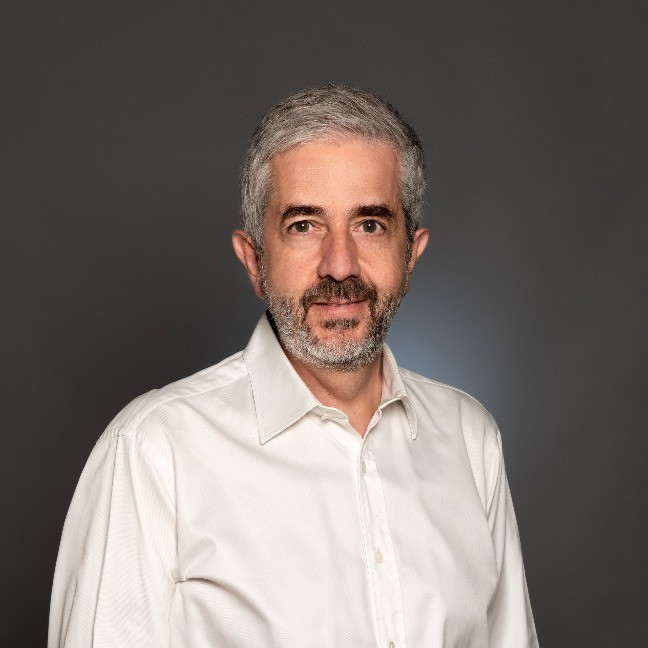

Etienne Pernot
Directeur recherche et valorisation
Direction de la recherche
e.pernot@efrei.fr
Etienne Pernot
Directeur recherche et valorisation
Ingénieur de l’École Polytechnique, ingénieur de Télécom Paris, diplômé d’un master en astrophysique de Sorbonne Université et docteur en mathématiques appliquées de l’université Paris-Dauphine. Il rejoint l’Efrei en septembre 2021 et dirige l’Efrei Research Lab.